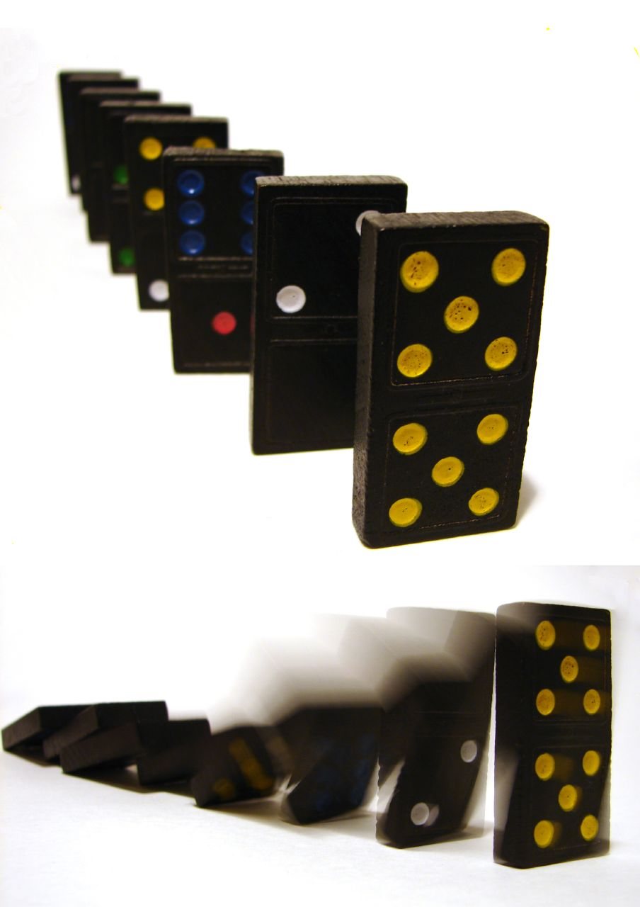

Section 5.2 Mathematical Induction
Subsection 5.2.1 Introduction, First Example
In this section, we will examine mathematical induction, a technique for proving propositions over the positive integers. Mathematical induction reduces the proof that all of the positive integers belong to a truth set to a finite number of steps.
Consider the following proposition over the positive integers, which we will label \(p(n)\text{:}\) The sum of the positive integers from 1 to \(n\) is \(\frac{n (n+1)}{2}\text{.}\) This is a well-known formula that is quite simple to verify for a given value of \(n\text{.}\) For example, \(p(5)\) is: The sum of the positive integers from 1 to 5 is \(\frac{5 (5+1)}{2}\text{.}\) Indeed, \(1 + 2 + 3 + 4 + 5= 15 =\frac{5
(5+1)}{2}\text{.}\) However, this doesn't serve as a proof that \(p(n)\) is a tautology. All that we've established is that \(5\) is in the truth set of \(p\text{.}\) Since the positive integers are infinite, we certainly can't use this approach to prove the formula.
An Analogy: A proof by mathematical induction is similar to knocking over a row of closely spaced dominos that are standing on end. To knock over the the dominos in Figure 5.2.2, all you need to do is push the first domino over. To be assured that they all will be knocked over, some work must be done ahead of time. The dominos must be positioned so that if any domino is pushed is knocked over, it will push the next domino in the line.

Returning to Example 5.2.1 imagine the propositions \(p(1), p(2), p(3),\ldots\) to be an infinite line of dominos. Let's see if these propositions are in the same formation as the dominos were. First, we will focus on one specific point of the line: \(p(99)\) and \(p(100)\text{.}\) We are not going to prove that either of these propositions is true, just that the truth of \(p(99)\) implies the truth of \(p(100)\text{.}\) In terms of our analogy, if \(p(99)\) is knocked over, it will knock over \(p(100)\text{.}\)
In proving \(p(99) \Rightarrow p(\text{l00})\text{,}\) we will use \(p(99)\) as our premise. We must prove: The sum of the positive integers from 1 to 100 is \(\frac{100 (100+1)}{2}\text{.}\) We start by observing that the sum of the positive integers from 1 to 100 is \((1 + 2 + \cdots + 99) +100\text{.}\) That is, the sum of the positive integers from 1 to 100 equals the sum of the first ninety-nine plus the final number, 100. We can now apply our premise, \(p(99)\text{,}\) to the sum \(1 + 2 + \cdots + 99\text{.}\) After rearranging our numbers, we obtain the desired expression for \(1 + 2 + \cdots + 100\text{:}\)
\begin{equation*}
\begin{split}
1 + 2 + \cdots + 99 + 100 & = (1 + 2 + \cdots + 99) + 100 \\
& = \frac{99 (99+1)}{2}+ 100 \textrm{ by our assumption of } p(99)\\
& = \frac{99\ 100}{2} + \frac{2\ 100}{2} \\
& = \frac{100\ 101}{2} \\
& = \frac{100 (100+1)}{2}
\end{split}\text{.}
\end{equation*}
What we've just done is analogous to checking two dominos in a line and finding that they are properly positioned. Since we are dealing with an infinite line, we must check all pairs at once. This is accomplished by proving that \(p(n) \Rightarrow p(n + 1)\) for all \(n \geq 1\text{:}\)
\begin{equation*}
\begin{split}
1 + 2 + \cdots + n + (n+1) & = (1 + 2 + \cdots + n) + (n + 1) \\
& = \frac{ n(n+1)}{2} + (n + 1) \textrm{ by } p(n) \\
& = \frac{ n(n+1)}{2}+\frac{2 (n+1)}{2}\\
& = \frac{ (n+1) (n+2)}{2} \\
& = \frac{ (n+1) ((n+1)+1)}{2}
\end{split}\text{.}
\end{equation*}
They are all lined up! Now look at \(p(1)\text{:}\) The sum of the positive integers from 1 to 1 is \(\frac{1+1}{2}\text{.}\) Clearly, \(p(1)\) is true. This sets off a chain reaction. Since \(p(1) \Rightarrow p(2)\text{,}\) \(p(2)\) is true. Since \(p(2) \Rightarrow p(3)\text{,}\) \(p(3)\) is true; and so on. \(\blacksquare\)
Theorem 5.2.3. The Principle of Mathematical Induction.
Let \(p(n)\) be a proposition over the positive integers. If
- \(p(1)\) is true, and
- for all \(n\geq 1\text{,}\) \(p(n) \Rightarrow p(n + 1)\text{,}\)
then \(p(n)\) is a tautology.
Note: The truth of \(p(1)\) is called the basis for the induction proof. The premise that \(p(n)\) is true in the second part is called the induction or inductive hypothesis. The proof that \(p(n)\) implies \(p(n + 1)\) is called the induction step of the proof. Despite our analogy, the basis is usually done first in an induction proof. However, order doesn't really matter.
Subsection 5.2.2 More Examples
Example 5.2.4. Generalized Detachment.
Consider the implication over the positive integers.
\begin{equation*}
p(n): q_0 \rightarrow q_1, q_1\to q_2, \ldots , q_{n-1}\to q_n, q_0\Rightarrow q_n
\end{equation*}
A proof that \(p(n)\) is a tautology follows. Basis: \(p(1)\) is \(q_0 \rightarrow q_1, q_0\Rightarrow q_1\text{.}\) This is the logical law of detachment which we know is true. If you haven't done so yet, write out the truth table of \(((q_0 \rightarrow q_1 )\land q_0)\to q_1\) to verify this step.
Induction: Assume that \(p(n)\) is true for some \(n \geq 1\text{.}\) We want to prove that \(p(n + 1)\) must be true. That is:
\begin{equation*}
q_0 \rightarrow q_1, q_1\to q_2, \ldots , q_{n-1}\to q_n , q_n\to q_{n+1}, q_0\Rightarrow q_{n+1}
\end{equation*}
Here is a direct proof of \(p(n + 1)\text{:}\)
| Step | Proposition | Justification |
| \(1 \textrm{ to } (n+1)\) | \(q_0 \rightarrow q_1, q_1\to q_2, \ldots , q_{n-1}\to q_n, q_0\) | Premises |
| \(n+2\) | \(q_n\) | \((1)\textrm{ to }(n+1)\text{,}\) \(p(n)\) |
| \(n+3\) | \(q_n\to q_{n+1}\) | Premise |
| \(n+4\) | \(q_{n+1}\) | \((n+2),(n+3),\) |
| detachment \(\quad \square\) |
Example 5.2.6. An example from Number Theory.
For all \(n \geq 1\text{,}\) \(n^3+2n\) is a multiple of 3. An inductive proof follows:
Basis: \(1^3+2(1)= 3\) is a multiple of 3. The basis is almost always this easy!
Induction: Assume that \(n \geq 1\) and \(n^3+2n\) is a multiple of 3. Consider \((n+1)^3+2(n+1)\text{.}\) Is it a multiple of 3?
\begin{equation*}
\begin{split}
(n+1)^3+2(n+1) & = n^3+3 n^2+3 n+1+ (2n+2) \\
& = n^3+2 n + 3 n^2+3 n+3 \\
& = (n^3+2 n) + 3( n^2+ n+1)
\end{split}\text{.}
\end{equation*}
Yes, \((n+1)^3+2(n+1)\) is the sum of two multiples of 3; therefore, it is also a multiple of 3. \(\square\)
Now we will discuss some of the variations of the principle of mathematical induction. The first simply allows for universes that are similar to \(\mathbb{P}\) such as \(\{-2, -1, 0, 1,\ldots \}\) or \(\{5, 6, 7, 8,\ldots \}\text{.}\)
Theorem 5.2.7. Principle of Mathematical Induction (Generalized).
If \(p(n)\) is a proposition over \(\{k_0 , k_0+ 1, k_0+ 2,\ldots \}\text{,}\) where \(k_0\) is any integer, then \(p(n)\) is a tautology if
- \(p(k_0)\) is true, and
- for all \(n \geq k_0\text{,}\) \(p(n) \Rightarrow p(n + 1)\text{.}\)
Example 5.2.8. A proof of the permutations formula.
In Chapter 2, we stated that the number of different permutations of \(k\) elements taken from an \(n\) element set, \(P(n; k)\text{,}\) can be computed with the formula \(\frac{n!}{(n-k)!}\text{.}\) We can prove this statement by induction on \(n\text{.}\) For \(n \geq 0\text{,}\) let \(q(n)\) be the proposition
\begin{equation*}
P(n; k) = \frac{n!}{(n-k)!} \textrm{ for all } k \textrm{, } 0 \le k \le n\text{.}
\end{equation*}
Basis: \(q(0)\) states that \(P(0; 0) \) if is the number of ways that \(0\) elements can be selected from the empty set and arranged in order, then \(P(0; 0) = \frac{0!}{0!} = 1 \text{.}\) This is true. A general law in combinatorics is that there is exactly one way of doing nothing.
Induction: Assume that \(q(n)\) is true for some natural number \(n\text{.}\) It is left for us to prove that this assumption implies that \(q(n +1)\) is true. Suppose that we have a set of cardinality \(n + 1\) and want to select and arrange \(k\) of its elements. There are two cases to consider, the first of which is easy. If \(k = 0\text{,}\) then there is one way of selecting zero elements from the set; hence
\begin{equation*}
P(n + 1; 0) = 1 =\frac{(n+1)!}{(n+1+0)!}
\end{equation*}
and the formula works in this case.
The more challenging case is to verify the formula when \(k\) is positive and less than or equal to \(n+1\text{.}\) Here we count the value of \(P(n+ 1; k)\) by counting the number of ways that the first element in the arrangement can be filled and then counting the number of ways that the remaining \(k -1\) elements can be filled in using the induction hypothesis.
There are \(n + 1\) possible choices for the first element. Since that leaves \(n\) elements to fill in the remaining \(k - 1\) positions, there are \(P(n; k - 1)\) ways of completing the arrangement. By the rule of products,
\begin{equation*}
\begin{split}
P(n +1;k) &= (n+1) P(n;k-1) \\
& = (n+1) \frac{n!}{(n-(k-1))!} \\
& = \frac{(n+1) n!}{(n-k+1)!}\\
& = \frac{(n+1)!}{((n+1)-k)!}
\end{split}
\end{equation*}
\(\blacksquare\)
Subsection 5.2.3 Course of Values Induction
A second variation allows for the expansion of the induction hypothesis. The course-of-values principle includes the previous generalization. It is also sometimes called strong induction.
Theorem 5.2.9. The Course-of-Values Principle of Mathematical Induction.
If \(p(n)\) is a proposition over \(\{k_0 , k_0+ 1, k_0+ 2,\ldots \}\text{,}\) where \(k_0\) is any integer, then \(p(n)\) is a tautology if
- \(p(k_0)\) is true, and
- for all \(n\geq k_0\text{,}\) \(p(k_0), p(k_0 + 1), . . . , p(n) \Rightarrow p(n + 1) \text{.}\)
A prime number is defined as a positive integer that has exactly two positive divisors, 1 and itself. There are an infinite number of primes. The list of primes starts with \(2, 3, 5, 7, 11,\ldots \) . The proposition over \(\{2, 3, 4, . . .\}\) that we will prove here is \(p(n)\text{:}\) \(n\) can be written as the product of one or more primes. In most texts, the assertion that \(p(n)\) is a tautology would appear as
Theorem 5.2.10. Existence of Prime Factorizations.
Every positive integer greater than or equal to 2 has a prime decomposition.
Proof.
If you were to encounter this theorem outside the context of a discussion of mathematical induction, it might not be obvious that the proof can be done by induction. Recognizing when an induction proof is appropriate is mostly a matter of experience. Now on to the proof!
Basis: Since 2 is a prime, it is already decomposed into primes (one of them).
Induction: Suppose that for some \(n \geq 2\) all of the integers \(2,3, . . . , n\) have a prime decomposition. Notice the course-of-value hypothesis. Consider \(n + 1\text{.}\) Either \(n + 1\) is prime or it isn't. If \(n + 1\) is prime, it is already decomposed into primes. If not, then \(n + 1\) has a divisor, \(d\text{,}\) other than 1 and \(n + 1\text{.}\) Hence, \(n + 1 = c d\) where both \(c\) and \(d\) are between 2 and \(n\text{.}\) By the induction hypothesis, \(c\) and \(d\) have prime decompositions, \(c_1 c_2 \cdots c_s\) and \(d_1 d_2 \cdots d_t\) , respectively. Therefore, \(n + 1\) has the prime decomposition \(c_1 c_2 \cdots c_s d_1 d_2 \cdots d_t\text{.}\)
Axiom 5.2.11. Peano Postulates.
The system of positive integers consists of a nonempty set, \(\mathbb{P}\text{;}\) a least element of \(\mathbb{P}\text{,}\) denoted 1; and a “successor function,” s, with the properties
- If \(k \in \mathbb{P}\) , then there is an element of \(\mathbb{P}\) called the successor of \(k\text{,}\) denoted \(s(k)\text{.}\)
- No two elements of \(\mathbb{P}\) have the same successor.
- No element of \(\mathbb{P}\) has \(1\) as its successor.
- If \(S \subseteq \mathbb{P}\text{,}\) \(1 \in S\text{,}\) and \(k \in S \Rightarrow s(k) \in S\text{,}\) then \(S = \mathbb{P}\text{.}\)
Notes:
- You might recognize \(s(k)\) as simply being \(k + 1\text{.}\)
- Axiom 4 is the one that makes mathematical induction possible. In an induction proof, we simply apply that axiom to the truth set of a proposition.
Exercises 5.2.4 Exercises for Section 5.2
1.
Prove that the sum of the first \(n\) odd integers equals \(n^2\) .
Answer.
We wish to prove that \(P(n):1+3+5+\cdots +(2n-1)=n^2\) is true for \(n \geqslant 1\text{.}\) Recall that the \(n\)th odd positive integer is 2n - 1.
Basis: for \(n=1\text{,}\) \(P(n)\) is \(1=1^2\text{,}\) which is true
Induction: Assume that for some \(n\geqslant 1, P(n)\) is true. Then:
\begin{equation*}
\begin{split}
1+3+\cdots +(2(n+1)-1) &= (1+3+\cdots +(2n-1) ) +(2(n+1)-1)\\
& =n^2+(2n+1) \quad \textrm{by } P(n) \textrm{ and basic algebra}\\
& =(n+1)^2 \quad \blacksquare
\end{split}
\end{equation*}
2.
Prove that if \(n \geq 1\text{,}\) then \(1(1!) + 2(2!) + \cdots + n(n!) = (n + 1)! - 1\text{.}\)
3.
Prove that for \(n \geq 1\text{:}\) \(\sum_{k=1}^n k^2= \frac{1}{6} n(n+1) (2 n+1)\text{.}\)
Answer.
Proof:
- Basis: \(1=1(2)(3)/6=1\)
- Induction:\begin{equation*} \begin{split} \sum_1^{n+1} k^2 &=\sum_1^n k^2+(n+1)^2\\ &=\frac{n(n+1)(2n+1)}{6}+(n+1)^2\\ &=\frac{(n+1)(2n^2+7n+6)}{6}\\ &=\frac{(n+1)(n+2)(2n+3)}{6}\textrm{ }\blacksquare\\ \end{split} \end{equation*}
4.
Prove that for \(n \geq 1\text{:}\) \(\sum_{k=0}^n 2^k = 2^{n+1}-1\text{.}\)
5.
Use mathematical induction to show that for \(n\geq 1\text{,}\)
\begin{equation*}
\frac{1}{1\cdot 2 }+ \frac{1}{2\cdot 3}+ \cdots + \frac{1}{n(n+1)}= \frac{n}{n+1}\text{.}
\end{equation*}
Answer.
Basis: For \(n=1\text{,}\) we observe that \(\frac{1}{(1\cdot 2)}=\frac{1}{(1+1)}\)
Induction: Assume that for some \(n\geqslant 1\text{,}\) the formula is true.
Then:
\begin{equation*}
\begin{split}
\frac{1}{(1\cdot 2)}+\cdots +\frac{1}{((n+1)(n+2))} &=\frac{n}{(n+1)}+\frac{1}{((n+1)(n+2))}\\
&=\frac{(n+2)(n)}{(n+1)(n+2)}+\frac{1}{(n+1)(n+2)}\\
&=\frac{(n+1)^2}{((n+1)(n+2))}\\
&=\frac{(n+1)}{(n+2)} \quad \blacksquare\\
\end{split}
\end{equation*}
6.
Prove that if \(n \geq 2\text{,}\) the generalized DeMorgan's Law is true:
\begin{equation*}
\neg (p_1 \land p_2\land \text{...} \land p_n)\Leftrightarrow (\neg p_1)\lor (\neg p_2) \lor \cdots
\lor (\neg p_n)\text{.}
\end{equation*}
7.
The number of strings of \(n\) zeros and ones that contain an even number of ones is \(2^{n-1}\text{.}\) Prove this fact by induction for \(n \geq 1\text{.}\)
Answer.
Let \(A_n\) be the set of strings of zeros and ones of length \(n\) (we assume that \(\lvert A_n \rvert =2^n\) is known). Let \(E_n\) be the set of the “even” strings, and \(E_{n}^{c}=\) the odd strings. The problem is to prove that for \(n\geqslant 1\text{,}\) \(\lvert E_n \rvert =2^{n-1}\text{.}\) Clearly, \(\lvert E_1\rvert =1\text{,}\) and, if for some \(n\geqslant 1, \lvert E_n\rvert =2^{n-1}\text{,}\) it follows that \(\lvert E_{n+1}\rvert =2^n\) by the following reasoning.
We partition \(E_{n+1}\) according to the first bit: \(E_{n+1}=\{1s\mid s \in E_n^c \}\cup \{ 0s \mid s \in E_n\}\)
Since \(\{1s\mid s \in E_n^c\}\) and \(\{0s \mid s \in E_n\}\) are disjoint, we can apply the addition law. Therefore,
\begin{equation*}
\begin{split}
\quad \lvert E_{n+1}\rvert & =\lvert E_n^c \rvert +\lvert E_n \rvert \\
& =2^{n-1}+ (2^n-2^{n-1}) =2^n.\quad \blacksquare
\end{split}
\end{equation*}
8.
Let \(p(n)\) be \(8^n-3^n\) is a multiple of 5. Prove that \(p(n)\) is a tautology over \(\mathbb{N}\text{.}\)
9.
Suppose that there are \(n\) people in a room, \(n \geq 1\text{,}\) and that they all shake hands with one another. Prove that \(\frac{n(n-1)}{2}\) handshakes will have occurred.
Answer.
Assume that for \(n\) persons \((n\geqslant 1),\frac{(n-1)n}{2}\) handshakes take place. If one more person enters the room, he or she will shake hands with n people,
\begin{equation*}
\begin{split}
\frac{(n-1)n}{2}+n & =\frac{n^2-n+2n}{2}\\
&=\frac{n^2+n}{2}=\frac{n(n+1)}{2}\\
&=\frac{((n+1)-1)(n+1)}{2}
\end{split}
\end{equation*}
Also, for \(n=1\text{,}\) there are no handshakes, which matches the conjectured formula:
\begin{equation*}
\frac{(1-1)(1)}{2}=0 \quad \blacksquare.
\end{equation*}
10.
Prove that it is possible to make up any postage of eight cents or more using only three- and five-cent stamps.
11.
Generalized associativity. It is well known that if \(a_1\text{,}\) \(a_2\text{,}\) and \(a_3\) are numbers, then no matter what order the sums in the expression \(a_1+ a_2+a_3\) are taken in, the result is always the same. Call this fact \(p(3)\) and assume it is true. Prove using course-of-values induction that if \(a_1\text{,}\) \(a_2\text{,}\) \(\ldots ,\) and \(a_n\) are numbers, then no matter what order the sums in the expression \(a_1+ a_2+\cdots +a_n\) are taken in, the result is always the same.
Solution.
Let \(p(n)\) be “\(a_{1} + a_2 + \cdots + a_n\) has the same value no matter how it is evaluated.”
Basis: \(a_1 + a_2 + a_3\) may be evaluated only two ways. Since + is associative, \((a_1 + a_2) + a_3 = a_1 + (a_2 + a_3)\text{.}\) Hence, \(p(3)\) is true.
Induction: Assume that for some \(n\geq 3\text{,}\) \(p(3), p(4), \dots , p(n)\) are all true. Now consider the sum \(a_1 + a_2 + \cdots + a_n + a_{n+1}\text{.}\) Any of the \(n\) additions in this expression can be applied last. If the \(j\)th addition is applied last, we have \(c_j=(a_1+a_2+\cdots +a_j)+(a_{j+1}+\cdots +a_{n+1})\text{.}\) No matter how the expression to the left and right of the \(j^{\text{th}}\) addition are evaluated, the result will always be the same by the induction hypothesis, specifically \(p(j)\) and \(p(n+1-j)\text{.}\) We now can prove that \(c_1=c_2=\cdots =c_n\text{.}\) If \(i < j\text{,}\)
\begin{equation*}
\begin{split}
c_i &=(a_1+a_2+\cdots +a_i)+(a_{i+1}+\cdots +a_{n+1})\\
&=(a_1+a_2+\cdots +a_i)+((a_{i+1}+\cdots +a_j)+(a_{j+1}+\cdots +a_{n+1})\\
&=((a_1+a_2+\cdots +a_i)+((a_{i+1}+\cdots +a_j))+(a_{j+1}+\cdots +a_{n+1})\\
&=((a_1+a_2+\cdots +a_j))+(a_{j+1}+\cdots +a_{n+1})\\
&=c_j \quad\quad \square
\end{split}
\end{equation*}
12.
Let \(S\) be the set of all numbers that can be produced by applying any of the rules below in any order a finite number of times.
- Rule 1: \(\frac{1}{2} \in S\)
- Rule 2: \(1 \in S\)
- Rule 3: If \(a\) and \(b\) have been produced by the rules, then \(a b \in S\text{.}\)
- Rule 4: If \(a\) and \(b\) have been produced by the rules, then \(\frac{a+b}{2}\in S\text{.}\)
Prove that \(a\in S \Rightarrow 0 \le a \leq 1\text{.}\)
Hint.
The number of times the rules are applied should be the integer that you do the induction on.
13.
Proofs involving objects that are defined recursively are often inductive. A recursive definition is similar to an inductive proof. It consists of a basis, usually the simple part of the definition, and the recursion, which defines complex objects in terms of simpler ones. For example, if \(x\) is a real number and \(n\) is a positive integer, we can define \(x^n\) as follows:
- Basis: \(x^1=x\text{.}\)
- Recursion: if \(n \geq 2\text{,}\) \(x^n= x^{n-1}x\text{.}\)
For example, \(x^3= x^2x\) = \((x^1x)x = (x x) x\text{.}\)
Prove that if \(n, m \in \mathbb{P}\text{,}\) \(x^{m+n}= x^mx^n\text{.}\) There is much more on recursion in Chapter 7.
Hint.
Solution.
Let \(p(m)\) be the proposition that \(x^{m+n}= x^mx^n\) for all \(n\geq 1\text{.}\)
For \(m\geqslant 1\text{,}\) let \(p(m)\textrm{ be } x^{n+m}=x^nx^m\) for all \(n\geqslant 1\text{.}\) The basis for this proof follows directly from the basis for the definition of exponentiation.
Induction: Assume that for some \(m\geqslant 1, p(m)\) is true. Then
\begin{equation*}
\begin{split}
x^{n+(m+1)} & =x^{(n+m)+1}\quad \textrm{by associativity of integer addition}\\
&=x^{n+m}x^1 \quad \textrm{ by recursive definition}\\
&=x^nx^mx^1 \quad \textrm{induction hypothesis}\\
&=x^nx^{m+1}\quad \textrm{recursive definition}\quad \square
\end{split}\text{.}
\end{equation*}
14.
Let \(S\) be a finite set and let \(P_n\) be defined recursively by \(P_{1 } = S\) and \(P_n= S\times P_{n-1}\) for \(n\geq 2\text{.}\)
- List the elements of \(P_3\) for the case \(S = \{a, b\}\text{.}\)
- Determine the formula for \(\lvert P_n \rvert\text{,}\) given that \(\lvert S \rvert= k\text{,}\) and prove your formula by induction.